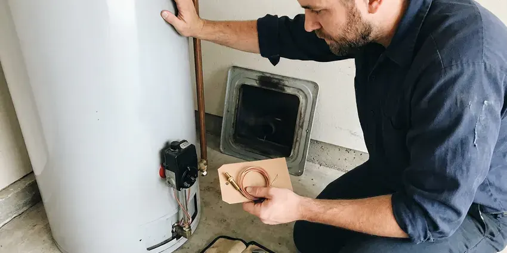

Foundation Leak Repair in Richmond, VA
Foundation leak repair in Richmond, VA starts with a pressure test, then electronic locating so the concrete cut is small and in the right spot.
- Licensed and Insured Plumbers
- PEX Reroutes Overhead
- Same-Week Leak Locating
- Spot Repairs Through Concrete
Plumbing Leak Under Your Foundation? Get It Fixed in Richmond, VA.
Call FBN Plumbing and we will pressure test the lines and tell you which one is leaking.
Foundation Leak Repair in Richmond, VA That Saves the Slab
FBN Plumbing finds and fixes the water and drain leaks under concrete slabs that people call slab leaks. Each line gets isolated and tested before we pick up a listening device. A ground microphone and a pressure gauge tell us where to cut in Richmond, so the opening in your floor is about the size of a doormat.
Our expertise includes:
- Exterior grading and drainage fixes
- Electronic and acoustic leak locating beneath slabs and stem walls
- Locating hidden leaks under concrete slabs

Additional Plumbing Repair Services in Richmond, VA
We offer expert plumbing repair services across Richmond, VA to stop leaks, clear blockages, and keep every fixture working the way it should.


Water Heater Repair near Richmond


Customers
Why Choose FBN Plumbing for Foundation Leak Repair in Richmond, VA?
A clamp on a leaking pipe buys time, not a repair. We cut out the bad section or reroute the line, and if the pipe has more pinholes coming, we tell you so.
- Repairs That Hold, We use code-approved fittings and proper bedding sand so the repaired section holds up under soil movement.
- Licensed Plumbers, Our technicians are licensed and work to Virginia plumbing code, and they pull permits when the job calls for one.
- Foundation Know-How, FBN Plumbing works on slab, stem wall and crawl space homes across Virginia, and each foundation type fails in different spots.
Citywide Coverage
From downtown to the outer neighborhoods, our crew handles foundation leaks across Richmond. Different parts of town were plumbed differently. When we know whether a subdivision used copper or PEX, we can guess the failure type before testing starts.
Experienced Team
Every technician at FBN Plumbing completes ongoing training on foundation repair methods and job-site safety. That includes saw and concrete work. Cutting, compacting and patching a slab correctly is a different skill from sweating copper, and we make sure the people doing it have done it many times before working in your home.
Safety-First Approach
Before cutting concrete, we scan for post-tension cables, rebar and buried utilities. That scan happens every time. A cut post-tension cable can whip out of the slab with enough force to injure someone and costs thousands to repair, so the radar goes on every slab before the saw does.
Trusted Certified Richmond Plumbing Services Professionals
At FBN Plumbing, we take pride in licensed, certified plumbing services throughout Richmond, VA. Those papers on the wall mean something. Every repair, install and maintenance visit follows strict safety and quality rules, and the plumbers doing the work carry recognized industry credentials.
Call Us Now PHCC Plumbing Contractor Recognition
PHCC Plumbing Contractor Recognition Better Business Bureau (BBB) Accreditation
Better Business Bureau (BBB) Accreditation Angi Certified Pro
Angi Certified Pro ISO 9001 Quality Management Certification
ISO 9001 Quality Management CertificationFinding and Repairing Foundation Leaks in Richmond, VA
Crawl Space Foundation Leak Repair in Richmond, VA
Crawl spaces hide leaks from supply lines, drains and AC condensate lines. Sagging, wet insulation is a common clue. Standing water under a house rots sills and joists and grows mold on the subfloor, so we repair the source and look at the vapor barrier while we are down there. A sump pump may make sense in a Richmond, VA crawl space that floods from outside.

Post-Tension Slab Leak Repair in Richmond
Many newer homes sit on post-tension slabs with steel cables under thousands of pounds of tension. Cutting one is dangerous. Before we open the floor, we scan with ground-penetrating radar to map the cables, and if the leak sits too close to a tendon, rerouting the line is the safer call.
Basement Wall Sealing and Waterproofing in Richmond, VA
Basement walls in Richmond, VA leak through cracks, tie holes and the joint where the wall meets the floor. Injection fixes cracks. We inject polyurethane or epoxy into single cracks, and for walls that weep along the bottom, we put in an interior drain tile and sump so water has somewhere to go besides your floor.
Direct Foundation Leak Repair in Richmond, VA
Direct repair means cutting into the floor right over the leak. It is often the cheapest fix. We saw a small opening, dig down to the pipe, replace the damaged section and pressure test it, then backfill in layers and patch the concrete flush with the floor around it. Your flooring contractor can lay new tile or wood afterward.
Commercial Foundation Leak Services in Richmond
Shops and offices in Richmond have longer runs and more fixtures on the slab. More pipe means more ground to cover. We trace and test after hours or on weekends when that keeps the doors open, and we schedule concrete cutting for the quietest window you have. FBN Plumbing documents the line layout for your facilities file.
Same-Day Foundation Leak Response in Richmond, VA
A large leak under the slab can flood floors and soak the ground fast. Turn off the main. We walk you through the shutoff over the phone, send a crew to locate the break, and isolate that line so the kitchen and bathrooms still have water while we plan the repair.
PEX and PVC Foundation Leak Repair in Richmond
Newer houses use PEX or PVC under the slab. Plastic pipe fails too. Most failures we find are at a fitting that was crimped short or a joint that pulled apart when the soil moved, not in the pipe wall itself. FBN Plumbing replaces the fitting with a proper crimp, expansion or solvent-weld connection so the line under your Richmond foundation is sound again.

Residential Foundation Leak Repair in Richmond, VA
For a homeowner in Richmond, VA, the first question is usually how bad it is. We answer that with a pressure test. If the gauge drops fast, the leak is large and needs attention this week, but a slow drop over twenty minutes points to a pinhole that gives you time to compare repair options. We also look for the cause, corrosion, ground movement or a bad fitting.
Foundation Leak Repair Near Me in Richmond, VA
People searching for foundation leak repair near me usually have a warm floor, a damp spot or a high bill. We can be there quickly. We find the leak and walk you through each repair option, with a written price for each, before we leave the house.
Searching 'foundation leak repair near me' in Richmond, VA usually means something feels wrong underfoot. FBN Plumbing covers the whole area and knows which subdivisions were plumbed with soft copper under the slab and which went with PEX. That helps.
FBN Plumbing at a Glance
- Licensed and insured plumbers serving Richmond, VA
- 24/7 emergency service with same-day scheduling
- Upfront, flat-rate pricing before work begins
- 4.9-star rated by 798+ Virginia customers
Richmond Map
Richmond Information
- Population
- 229,247
- Area codes
- 804/434/757
- Service area
- Richmond and communities within 40 miles
- Nearby
- Tuckahoe, Williamsburg, Fredericksburg, Newport News
Soil under a house swells or washes out when a hidden line soaks it, which is how a pinhole under a foundation in Richmond, VA ends up as a cracked slab.
Talk to a Plumber
Reach out to FBN Plumbing for honest, reliable plumbing from people who know the trade in Richmond, VA.
Our Specialized Plumbing Services in Richmond, VA
At FBN Plumbing, we handle the full list of plumbing services across Richmond, VA. We go from leak detection all the way to full system installations, for homes and commercial buildings, and we do it quickly at a fair price. Explore our core services below:


What to Expect From Foundation Leak Repair in Richmond, VA
Locate, choose the repair, protect the house: those are the three jobs.
Schedule an Inspection
Call (434) 230-6997 or fill out the form. We get the basics over the phone and book a time that works for you.
Test and Inspect
A technician runs pressure tests and locates the leak, and checks whether the water is coming from plumbing, groundwater or a drainage problem outside.
Written Proposal
You get a written proposal with the repair method, materials, time on site and price. Nothing starts until you approve it.
Frequently Asked Questions About Foundation Leak Repair in Richmond
Sealing a minor crack can cost around $500. Under-slab plumbing runs higher. A complex slab leak that needs digging or a repipe in Richmond, VA can go past $5,000, depending on access, foundation type and how much flooring has to come up. You get the number in writing first.
We repair copper, PEX and PVC lines in Richmond homes. With PEX, we match the existing fitting system, such as Uponor expansion or Viega crimp, so the new joint works with what is already there. Every part is code-approved.
Probably not, and it isn't worth trying. The locating gear is expensive. You would need a ground mic, a pressure test rig, a concrete saw and the code knowledge to make joints under a slab that will hold for decades. A missed spot means a second hole in your Richmond floor.
Policies often cover sudden leaks. They rarely pay for the pipe. What insurers tend to cover is the cost of getting to the leak and fixing damage it caused, like flooring and drywall, so call your agent and ask how your own policy handles access and resulting damage.
Yes, they can. Water washes out soil. A leak left for months can wash out supporting soil, rot crawl space framing and rust rebar, and that structural repair dwarfs the plumbing bill. Early repair is cheaper.
A water bill that jumps for no reason is often the first sign. Watch for warm spots on tile. Other signs include the sound of running water with everything shut off, new cracks in walls or concrete, and a drop in pressure. Musty smells near the foundation in Richmond are worth checking too.
We do, in writing, for our workmanship, and materials carry the manufacturer's warranty. Coverage gets explained before work starts.
Parts and labor are both covered on our foundation leak repairs. You see the terms first. A new PEX reroute typically gets longer coverage than a patch on aging copper, since the pipe around it is new. Details go on your Richmond estimate.
Hear From Customers Who Hired Our Plumbing Experts

Paul B.
Our pit pump ran nonstop even in dry weather. The plumber found the check valve was stuck open, so the same water kept cycling back into the pit. New valve, new float switch, done in an hour. It runs quiet now.
Sump Pump · Newport News, VA
Carlos V.
Our house still had galvanized pipe, and upstairs the shower was a trickle. The crew repiped everything in PEX over three days and patched every drywall hole before they left. The pressure difference is night and day.
Repiping · Hampton, VA
Karen W.
After our third pinhole leak in copper, we stopped patching. FBN Plumbing gave us a written plan room by room and repiped the house in PEX while we stayed in it. The crew covered our floors every morning and cleaned up every night.
Repiping · Newport News, VA
James P.
Our restaurant had a slow leak at the hand sink that was rotting the cabinet base. FBN Plumbing came in at six in the morning before prep, replaced the trap and both supply lines, and was packed up before my first cook clocked in.
Commercial Plumbing · Richmond, VABrian W.
I smelled gas behind the dryer and called right away. The plumber found a corroded flex connector, replaced it, and pressure tested the whole line before turning the gas back on. He let me watch the gauge hold steady for fifteen minutes.
Gas Line Repair · Fredericksburg, VAAngela D.
Our sump pump quit during a storm and the water was an inch from the basement carpet. FBN Plumbing put in a new pump with a battery backup that same evening. We have had two heavy rains since. It kicked on both times.
Sump Pump · Fredericksburg, VA